Antipasti
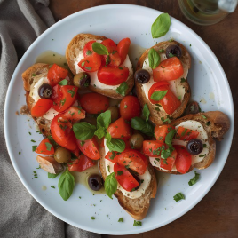
Bruschette miste - €5,00- Pane casereccio, pomodoro, basilico, olio evo, aglio, olive
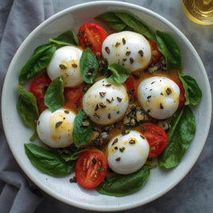
Caprese - €6,00- Mozzarella di bufala, pomodoro, basilico, olio evo
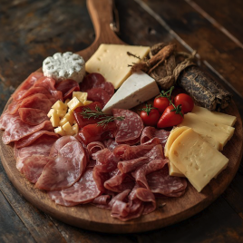
Tagliere di salumi - €9,00- Prosciutto crudo, salame, coppa, formaggi misti
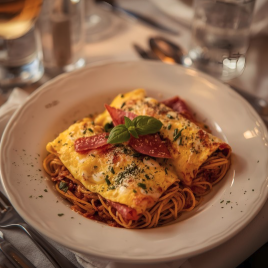
Frittatine di pasta - €5,50- Spaghetti, uova, formaggio, salame, pepe
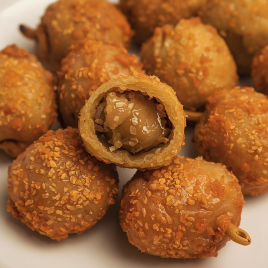
Olive ascolane - €6,50- Olive verdi, carne macinata, pangrattato, uova, parmigiano
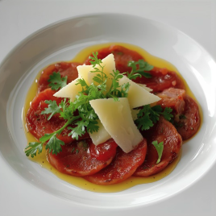
Carpaccio di manzo - €8,00- Manzo, rucola, grana, olio evo, limone
Pizze
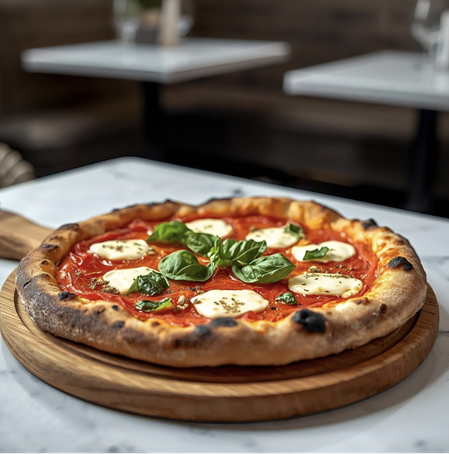
Margherita - €6,00Pomodoro, mozzarella, basilicoPossibilità di aggiungere origano, olio piccante, basilico fresco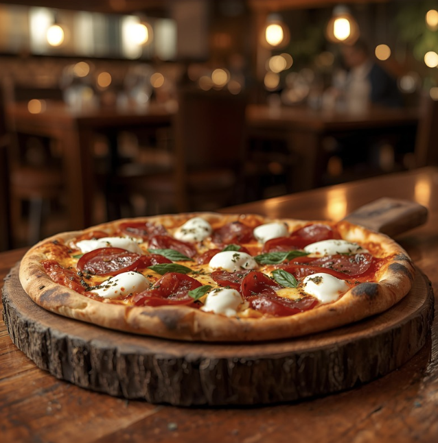
Diavola - €7,00Pomodoro, mozzarella, salame piccanteSalame piccante dolce o extra (a scelta)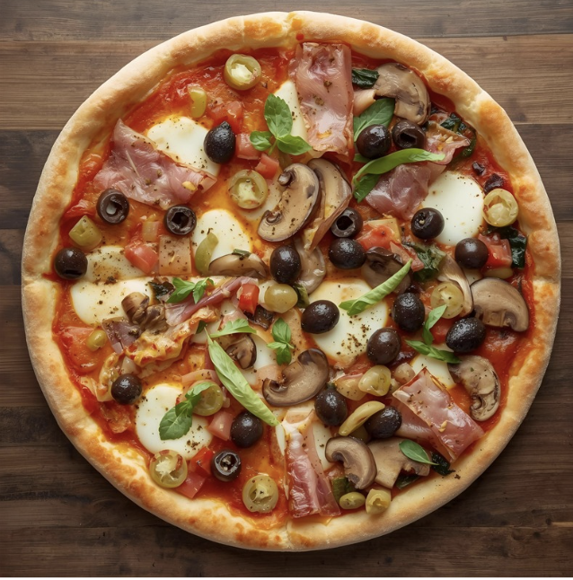
Quattro Stagioni - €8,00Pomodoro, mozzarella, funghi, prosciutto, carciofi, oliveOlive nere/ verdi, carciofi freschi/ sott'olio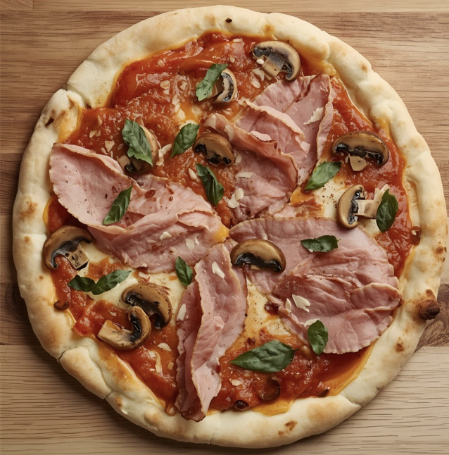
Prosciutto e Funghi - €7,50Pomodoro, mozzarella, prosciutto cotto, funghiFunghi champignon o porcini, prosciutto cotto o crudo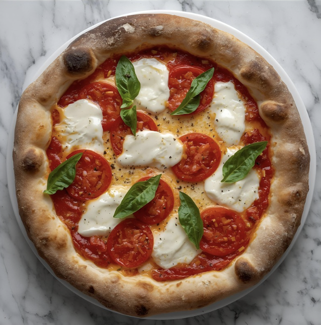
Bufalina - €8,50Pomodoro, mozzarella di bufala, basilicoAggiunta di pomodorini, origano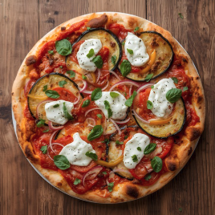
Ortolana - €8,00Pomodoro, mozzarella, zucchine, melanzane, peperoni, cipolla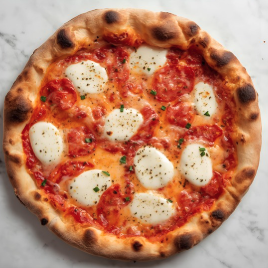
Quattro Formaggi - €8,00Pomodoro, mozzarella, gorgonzola, fontina, parmigiano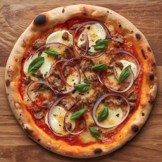
Tonno e Cipolla - €7,50Pomodoro, mozzarella, tonno, cipolla rossa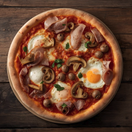
Capricciosa - €9,00Pomodoro, mozzarella, prosciutto cotto, funghi, carciofi, olive, uovo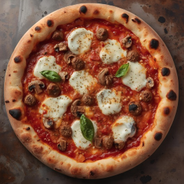
Boscaiola - €8,50Pomodoro, mozzarella, salsiccia, funghi, panna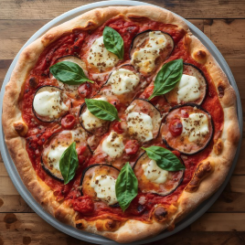
Parmigiana - €8,00Pomodoro, mozzarella, melanzane, grana, basilico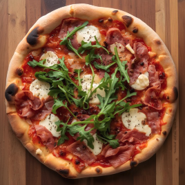
Crudo e Rucola - €9,00Pomodoro, mozzarella, prosciutto crudo, rucola, scaglie di grana
Primi e Secondi
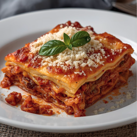
Lasagna - €9,00Pasta, ragù, besciamella, parmigianoDisponibile anche vegetariana (sugo di verdure)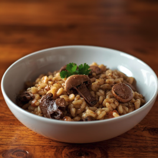
Risotto ai funghi - €8,00Riso, funghi porciniPiatto disponibile anche con funghi misti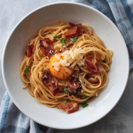
Spaghetti alla Carbonara - €8,50Uova, guanciale, pecorino, pepeGuanciale o pancetta, mezzo pecorino e mezzo parmigiano (a scelta)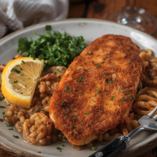
Cotoletta alla Milanese - €10,00Carne di vitello panata, frittaServita con patatine fritte o insalata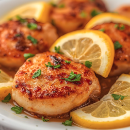
Scaloppine al limone - €9,00Fettine, limone, farina, vino biancoPossibilità di variante al vino bianco o ai funghi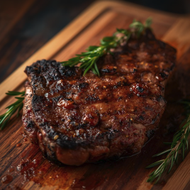
Bistecca ai ferri - €13,00Manzo, rosmarino, olio extravergine, saleAl sangue, media, ben cotta. Salsa: pepe verde o rosmarino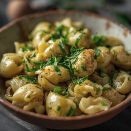
Orecchiette alle Cime di Rapa - €8,50Orecchiette, cime di rapa, acciughe, peperoncinoPeperoncino piccante opzionale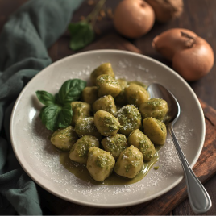
Gnocchi al Pesto - €8,00Gnocchi di patate, pesto di basilico, granaCon o senza pinoli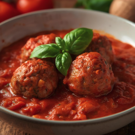
Polpette al Sugo - €9,50Carne macinata, salsa di pomodoro, parmigianoVersione vegetariana con legumi disponibile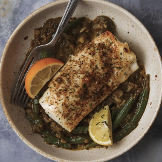
Branzino al Forno - €12,00Filetto di branzino, erbe aromatiche, patate al fornoPossibilità di aggiungere limone fresco
Dolci
 Tiramisù - €4,00Classico, fragola, pistacchio
Tiramisù - €4,00Classico, fragola, pistacchio Panna cotta - €4,00Salsa a scelta: frutti di bosco, cioccolato, caramello
Panna cotta - €4,00Salsa a scelta: frutti di bosco, cioccolato, caramello Crostata di frutta - €4,50Farcia: crema pasticcera o ricotta, frutti misti
Crostata di frutta - €4,50Farcia: crema pasticcera o ricotta, frutti misti Gelato artigianale - €3,50Cioccolato, vaniglia, fragola, limone, pistacchio
Gelato artigianale - €3,50Cioccolato, vaniglia, fragola, limone, pistacchio Cheesecake - €4,50Ai frutti rossi, al cioccolato bianco, al limone
Cheesecake - €4,50Ai frutti rossi, al cioccolato bianco, al limone Sorbetto al limone - €3,00Anche al mandarino
Sorbetto al limone - €3,00Anche al mandarino Cannolo Siciliano - €5,00Ricotta, scorza d'arancia, cioccolato, granella di pistacchio
Cannolo Siciliano - €5,00Ricotta, scorza d'arancia, cioccolato, granella di pistacchio- Classico, pistacchio, oppure cioccolato
 Babà al Rum - €5,00Dolce lievitato, bagna al rum
Babà al Rum - €5,00Dolce lievitato, bagna al rum- Con panna o frutta fresca (+0,50€)
 Sacher - €4,50Torta al cioccolato con confettura di albicocche
Sacher - €4,50Torta al cioccolato con confettura di albicocche- Servita con panna montata
 Brownie - €4,00Dolce al cioccolato e noci
Brownie - €4,00Dolce al cioccolato e noci- Con gelato alla vaniglia o cioccolato (+1,00€)
 Zuccotto - €4,50Pan di Spagna, ricotta, canditi, cioccolato
Zuccotto - €4,50Pan di Spagna, ricotta, canditi, cioccolato- Classico o al cioccolato
Bevande
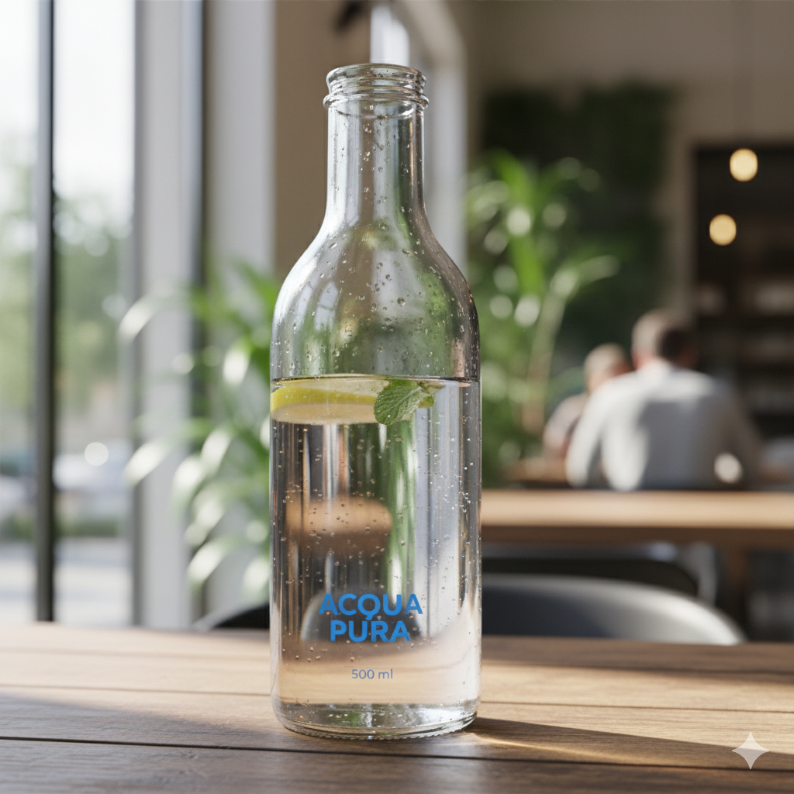
Acqua - Naturale/gasata 0,5L - €1,00- Lete, Sant’Anna, Levissima
- Bibite - Coca Cola/Fanta/Sprite 0,33L - €2,00
- Pepsi, Chinotto, Estathé
- Birra - 0,33L - €3,00
- Heineken, Moretti, Peroni, Ichnusa non filtrata
- Vino della casa - Calice - €2,50
- Bianco, rosso, rosato
- Caffè - €1,00
- Normale, decaffeinato, corretto
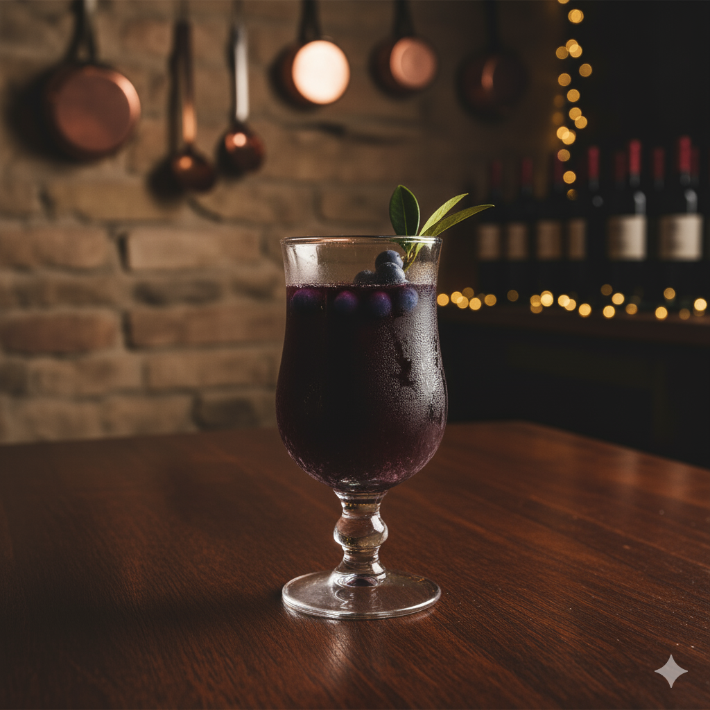
Amaro - €2,00- Montenegro, Averna, Jägermeister
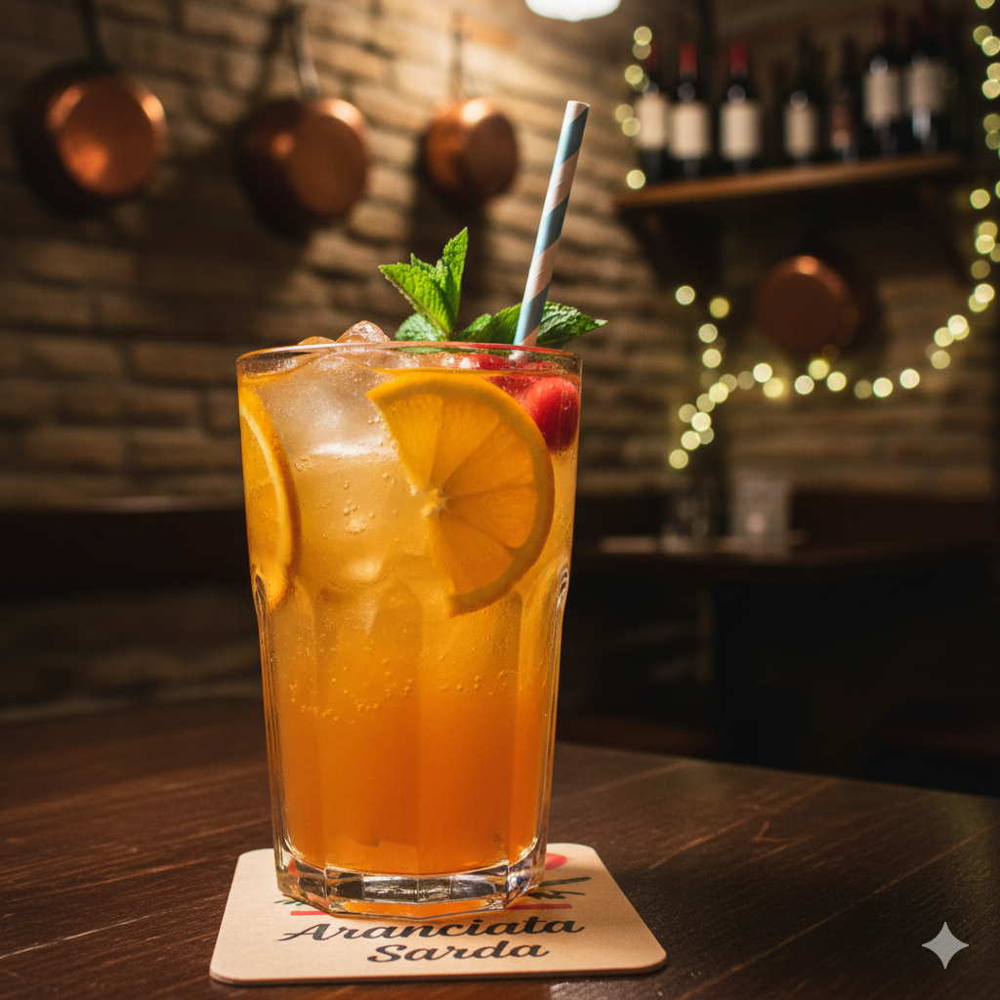
Aranciata - Bibita analcolica 0,33l - €2,00- Sanpellegrino, Fanta
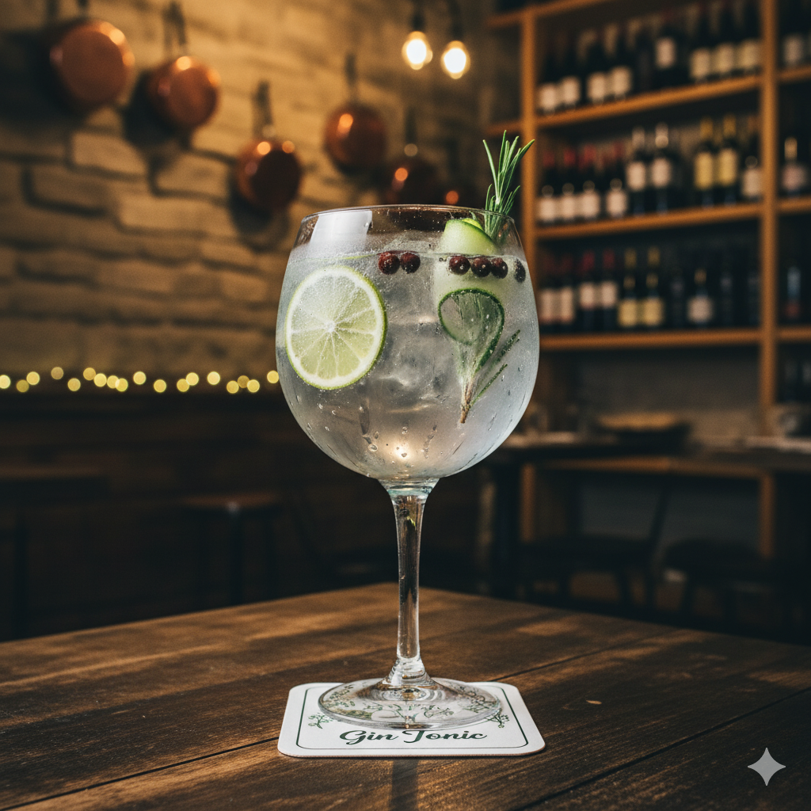
Gin Tonic - Gin premium e acqua tonica - €5,00- Gin Bombay, Tanqueray (a scelta)
- Succo ACE - Succo arancia, carota, limone 0,2l - €2,00
- Valfrutta, Yoga
Contatti
Telefono: +39 345 322 3445
Indirizzo: Via delle Ginestre 8, 27021 Montivera (SA)